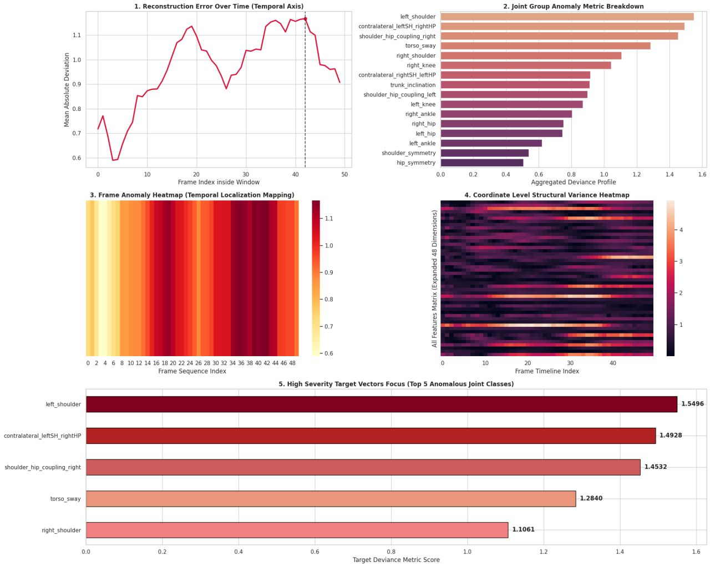

Computer Vision & AI
Automated Gait Analysis System
AI-Powered Biomechanical & Neurological Anomaly Detection Pipeline
An end-to-end computer vision and deep learning pipeline designed to extract 33 3D spatial biomechanical features from video and detect subtle movement anomalies. Integrates a GAN-based neural network to model normal gait patterns and detect neurological deviations without requiring expensive motion capture hardware.
Python
PyTorch
MediaPipe
GAN
Computer Vision